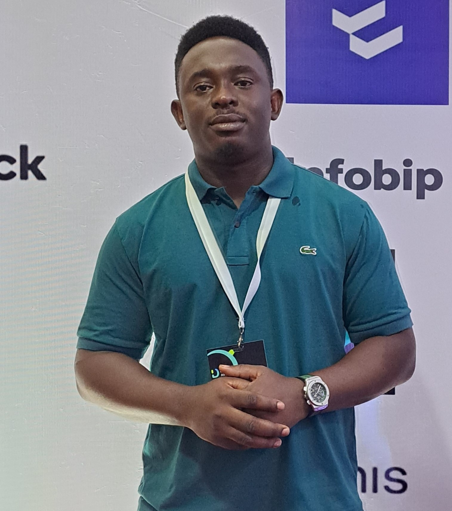
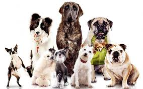

I am a Data Analyst specialist focused on improvement and performance with a flair for collaboration and innovation for growth. I am versatile in identifying, selecting, and using enhanced analytical and managerial tools to generate insights to make data-driven decisions.
Over the years I have participated in projects that utilizes data science and data analytics; Leveraged analysis techniques to discover hidden insights and provide optimal ways to solve problems that drive company’s growth and stability.
My programming prowess in languages like Python and Structured Query Language (SQL) is pretty solid, I am also familiar with the basics of R Language which is gaining increasing popularity in the data driven community. Other concepts that I have developed a strong foundation include Microsoft PowerBI, Git, Database Management Systems, Information Storage System, Machine Learning, and Statistical visualization amongst many others..

The Ford Go-Bike DataSet contains information that covers over 180k records of individual rides made in a bike-sharing system covering the Great San Francisco Bay area in Feb-2019. This project is aimed to give an overview of the dataset and answer important questions regarding bike trips. The Data wrangling, cleaning and visualizations is done with python on Jupyter notebook..

The dataset for this project is the tweet archive of Twitter user @dog_rates, also known as WeRateDogs. WeRateDogs is a Twitter account that rates people's dogs with a humorous comment about their dogs. The dataset was wrangled from three (3) different Sources; Twitter archive which contains basic tweet data of over 5000+ tweets. Secondly, Twitter API containing 3000 of their most recent likes and retweets. The WeRateDogs Twitter account was queried to gather this data. Lastly, Image predictions file which was obtained by running every image in WeRateDogs to predict the breeds of each dog.
The objective of this project is to investigate a dataset of appointment records for Brazil public hospitals. The data includes some attributes of patients and state if the patients showed up to appointments. The analysis is focused on finding trends influencing patients to show or not show up to appointments using descriptive statistics.
This project involves the data cleaning and visualization of Sales and Market dataset using Microsoft Power BI. The project is focused on building a data-driven story report with the Power BI app.